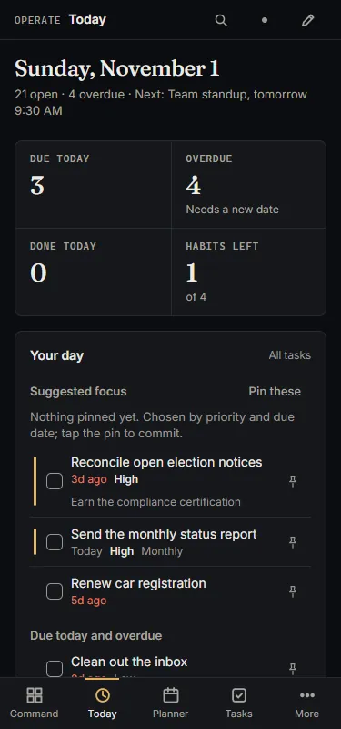

Private, local-first life operations
Your whole life, run from one private place.
Tasks, goals, money, food, body, journal and the people in your life, linked in one app that keeps every record on your device.


Every screenshot on this site comes from the built-in demo dataset.
- 14ModulesOne data model across all of them.
- 1TimelineEvery meaningful action lands in one History.
- 0TrackersNo analytics, ads or third-party scripts.
- 4Opt-in connectionsEach one off until you turn it on.
- 600,000PBKDF2 roundsStretching your sync passphrase into a key.
01How it works
Your device is the source of truth. Sync only carries locked boxes.
Northstar works fully offline with no account. If you want the same data on a phone and a laptop, turn on end-to-end encrypted sync. Here is what each side can see.
Your device
Source of truth
- Every record, readable, in your browser’s database
- Your passphrase and keys. They never leave
- Search, charts and Command rules, all computed here
In transit
Only if sync is on
- One locked box per record
- A fresh random value for every encryption
- Table and record id bound in, so boxes cannot be swapped
Your Supabase project
You create it and own it
- Account email and sign-in times
- Table names, opaque ids and row counts
- Timestamps and ciphertext sizes
- Cannot read any record
02Modules
Fourteen areas of life. One connected model.
Each area stands on its own and links to the others, so the weekly review, the timeline and the suggestions can see across all of them.

Planner
Week and day views for events and tasks.
- Week and day views with events and tasks together
- Plan my day surfaces high-priority tasks with no date
- Optional read-only Google Calendar, copied locally

Tasks
Capture in one line, work from a queue.
- One line sets due date, priority and goal link
- Recurring tasks that keep their day in short months
- Keyboard queue: j, k, x and Enter

Goals
Life, year and quarter goals with real progress.
- Life, year and quarter horizons with milestones
- Progress follows the linked tasks you complete
- Quiet goals become a proposal for a next step

Finance
Import, categorize, budget, see net worth.
- CSV and OFX/QFX import with duplicate detection and undo
- Budgets, net worth and merchant rules
- No bank login is ever asked for

Food
Meals, targets and what is left today.
- Meal slots, favorites and templates
- Calories and protein left today against your targets
- Optional food search, off until you enable it

Body
Weight trend and where it is heading.
- A 7-day average over faint daily weigh-ins
- 4-week rate and a projected goal date
- Targets that feed the Food module

Journal
Write privately, with an immersive focus mode.
- Prompts, templates, #tags, mood and energy
- Focus mode hides everything but the page
- Never leaves the device unless sync is on

Habits
Daily check-ins and streaks.
- One-tap check-ins here or from Today
- Streaks and completion stats show the pattern
- Each check-in is written to your History
03One line is enough
Capture without friction. Try it here.
The capture bar understands plain text and files each line where it belongs. Type below or pick an example.
- Title
- buy milk
- Due
- Tomorrow
- Priority
- High
- Repeats
- No
- Goal
- None
Files into Tasks. Completing it is logged to History.
Demo: a small re-implementation of the app’s capture parser, running in this page. Goal tags match the demo dataset’s goals. Nothing you type is sent or stored.
Examples
- buy milk tomorrow !1
A task due tomorrow, high priority.
- call mom fri #career
A task due Friday, linked to your quarter career goal.
- $12.50 chipotle
An expense of $12.50 in Finance.
- ate oatmeal 350cal
A 350-calorie meal, slotted by the time of day.
- weight 136.4
Today’s weight in Body.
- journal: long walk, felt clear
Appended to today’s journal entry.
- pay rent every month
A monthly recurring task.
- win: shipped the report #career
A career win on your timeline.
04Command proposals
Suggestions from your own data. Nothing changes until you say so.
Rules notice overdue work, stalled goals, people you have not called and uncategorized spending, then propose one concrete fix with the evidence.
Categorize 3 transactions from Chipotle as Dining
Merchant matches a built-in rule. Low risk.
- Oct 28 · Chipotle · −$12.50UncategorizedDining
- Oct 21 · Chipotle · −$11.85UncategorizedDining
- Oct 14 · Chipotle · −$13.20UncategorizedDining
Illustration with demo merchants and amounts.
05Private by design
Private by architecture, not by promise.
There is no Northstar server that receives your data. Four optional connections exist, each off until you turn it on, and each one is listed with exactly what it sends.
| Question | Northstar | Typical cloud app |
|---|---|---|
| Where your records live | On your device, in your browser | On the provider’s servers |
| Account needed | No. Only if you turn on sync | Usually |
| Who can read records on a server | Nobody. Sync uploads ciphertext only | Usually the provider, under its policy |
| Analytics and tracking scripts | None | Common |
| Works with no connection | Fully | Often limited |
| Getting all your data out | One JSON export of everything | Varies |
“Typical cloud app” describes a common pattern, not any specific product.
Start with one line.
Open the app, load the demo to look around, or start empty. It installs on your phone and laptop and works offline.